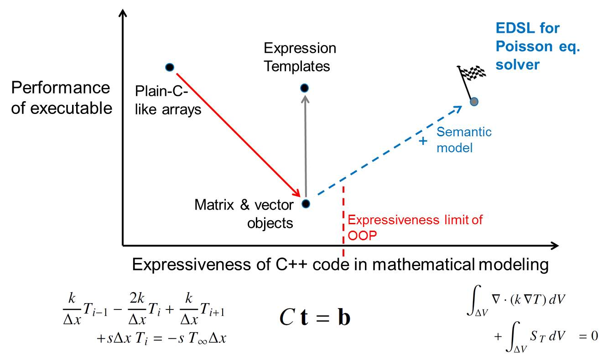

ProtoToPoisson as a Research Project¶
Issue¶
Limit of object-oriented programming (OOP) in C++
- Expressiveness of OOP is not enough for describing a discretization model with finite volume method (FVM).
- Peformance penalty of OOP style is apparent in matrix and vector operations which are required for solving disretized pertial differential equations (PDEs).
Goal¶
To overcoming a limitation of OOP in C++, our EDSL is going to provide semantic model
- transforming the description of a descretization model into plain-C-like code, and
- parallelizing a matrix solver algorithm based on a user given model.
Contents¶
ChangeLog¶
- Feb. 5. 2016
- Application example 1 was confirmed to work.